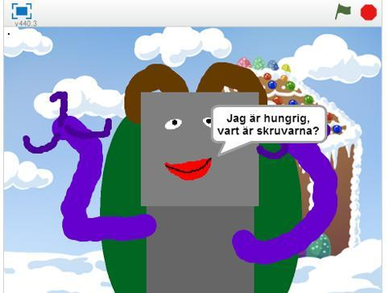
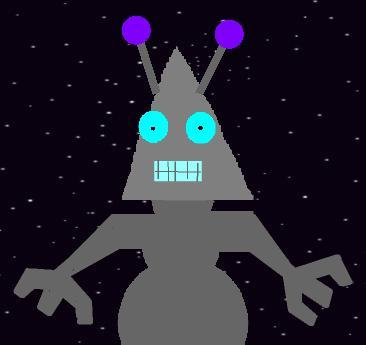
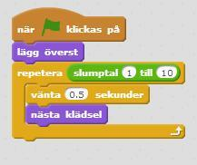
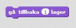
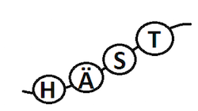
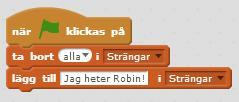
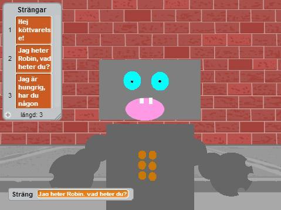
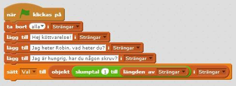
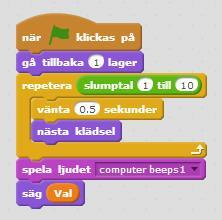

Robotgenerator
Nu ska du få skapa ett program som sätter ihop olika robotdelar till en slumpmässig robot! Roboten får olika klädslar och säger olika saker varje gång du trycker på start. Programmet kommer även att växla bakgrund för varje ny robot. Du får själv rita robotens delar och bestämma vad den ska säga! Dessutom kommer du att få lära dig att använda strängar och listor.
Ett exempel på Robotgenerator hittar du här: https://scratch.mit.edu/projects/83059676

1: Skapa robotklädslar
Du börjar med att rita olika klädslar som ska föreställa robotens delar. Du kommer att göra flera olika huvuden, armar, munnar, ögon och så vidare så att du sedan kan göra till flera olika kombinationer av robotar!
Skapa ett nytt Scratch-projekt och ta bort katten.
Klicka på Rita ny sprajt. Klicka igen tills du har totalt sex tomma sprajtar. Döp om sprajtarna till: "kropp", "huvud", "armar", "mun", "ögon", "extra".
Nu får du gå in på varje sprajt och rita egna klädslar till dem. Börja med att markera sprajten "kropp". Gör den första klädseln som är en stor grå kvadrat. Välj Rita ny klädsel och gör den som en stor grå cirkel.
Gör nu två till klädslar som du väljer helt själv. Hur vill du att en robots kropp ska se ut?
Tips: Det är viktigt att alla klädslar är centrerade i ritytan, annars kommer sprajten att hoppa hit och dit på Scenen! Du kan fixa det genom att sätta klädselns centrum till mitten av klädseln.

Dra sedan sprajten "kropp" till mitten av Scenen och lägg i nederkant så att kroppen sticker upp från nederkanten.
Gör på samma sätt med sprajterna "huvud", "armar", "mun", "ögon", "extra". Hitta på flera olika klädslar för varje sprajt.
"Extra" kan till exempel vara antenner, en hatt eller ett halsband. Du kan behöva placera just dessa klädslar lite olika och inte centrerat som för de andra sprajterna!
Placera alla sprajter på Scenen så att alla robotens delar sitter där du vill ha dem.

Tips: Behöver du inspiration för att hitta på hur en robot kan se ut? Sök på "robot" på nätet och titta på bilder. Tänk på att du kan ge roboten olika känslolägen med glad eller ledsen mun, trötta eller pigga ögon och så vidare.
Testa ditt projekt! Klicka på START. Hamnar någon del bakom en annan, till exempel ögonen bakom huvudet? Du kommer strax att göra ett skript som säger åt delarna att lägga sig i rätt ordning, så att det ser rätt ut.
2: Skript som kombinerar robotar
Nu vill du programmera din robotgenerator så att den slumpmässigt väljer olika klädslar varje gång du trycker på START. Ungefär som när du drar i spaken på en Enarmad bandit! Du behöver också säga åt programmet att lägga sprajterna i rätt ordning, i det LAGER där du vill ha dem.
Skapa ett skript för sprajten "ögon" som säger:
- Starta när START klickas på
- Lägg överst av alla lager
- Repetera slumptal 1 till 10:
- Vänta 0.5 sekunder
- Byt till nästa klädsel
Kopiera skriptet till sprajten "mun". Både mun och ögon kan ligga i översta lagret.

Testa ditt projekt! Klicka på START. Ändras robotens mun och ögon och stannar på en slumpmässigt vald klädsel?
Kopiera skriptet till "huvud", "kropp", "armar" och "extra". Här behöver du flytta bak sprajterna till olika lager. Byt ut blocket lägg överst till gå tillbaka 0 lager. Sätt olika värden för att bestämma vilken sprajt som ska ligga framför den andra.

Testa ditt projekt! Klicka på START. Ändras alla robotens delar? Stannar de efter en halv sekund på en slumpmässigt vald klädsel? Sitter alla delar där du vill att de ska vara? Är de i rätt lager?
Tips: Om det är någon klädsel som inte sitter helt rätt, kan du prova att ändra klädselns centrum på just den!
3: Slumpmässig bakgrund
Nu ska du se till att även din scen byter till en slumpmässig bakgrund varje gång du trycker på START. Du får själv välja olika bakgrundsbilder till Scenen.
Markera Scenen och välj ny Bakgrund från biblioteket – välj ut fyra bakgrunder som du vill använda och ta bort den vita bakgrunden som fanns från början.
Skapa ett skript för scenen som gör samma sak som sprajternas skript, fast att du byter bakgrund istället för klädsel. Du behöver inte tänka på lager här.
Testa ditt projekt! Klicka på START. Ändras bakgrunden nu?
4: Vad ska roboten säga?
Nu ska du få hitta på vad roboten ska säga, och som också blir olika varje gång du trycker på START. För att göra det behöver du skapa en LISTA med slumpmässiga STRÄNGAR.
En STRÄNG är en variabel som har text istället för siffror som värde. Det är ungefär som ett pärlhalsband med bokstäver eller ord skrivna på pärlorna. En sträng kan innehålla alla bokstäver och andra tecken så som mellanslag och utropstecken.

En LISTA är en variabel som innehåller flera andra variabler. Om variabeln är byrålådan så är listan hela byrån med alla lådor. En lista kan innehålla flera olika siffror, eller flera olika strängar.
Nu ska du få göra en lista med strängar för vad roboten ska kunna säga!
Välj blocket Skapa en lista under DATA och kalla den för "Strängar".
Markera Scenen och skapa ett nytt skript som säger:
- Starta när START klickas på
- Först ta bort alla i listan "Strängar"
- Sedan lägg till "Hej, jag heter Robin!" i "Strängar"

Välj själv vad roboten ska säga och lägg till flera meningar i "Strängar" under varandra i samma skript.
Testa ditt projekt! Klicka på START. Kan du se dina strängar i en lista på scenen? Ser du att de är numrerade? Listan kan du sedan klicka ur och gömma, men just nu är det bra att du ser den.

Nu ska du programmera roboten att slumpmässigt välja ett objekt ur listan med strängar och säga den meningen. För det behöver du skapa en variabel som innehåller det slumpmässiga valet.
Skapa en variabel och kalla den för "Val". I det skript som du redan har skapat för scenen, lägg till en blockrad som säger:
- Sätt "Val" till
- Det objekt i "strängar"
- Som är ett slumptal mellan 1 och längden av listan "Strängar"

Så här borde skriptet för scenen se ut, fast med dina strängar.
Nästa steg är att få roboten att säga den valda strängen, och samtidigt göra ett robotljud! Gå till sprajten "huvud" och fliken LJUD. Klicka på Nytt ljud från bibliotek och välj ett passande ljud, till exempel "computer beeps1".
Fortsätt på ditt skript för sprajten "huvud". Lägg till att den ska:
- Spela ljudet "computer beeps 1"
- Säg innehållet i variabeln "Sträng"
Tips: Du behöver lägga in variabeln "Val" som du har under DATA, det räcker alltså inte att skriva ordet "Val" i Säg-blocket.

Så här borde skriptet för robotens huvud se ut.
Testa ditt projekt! Klicka på START. Säger roboten något? Säger den olika saker varje gång du klickar på START? Låter roboten?
Tips: Nu kan du klicka ur och gömma din variabel och din lista så att de inte syns på scenen!
Färdig!
Grattis, nu har du gjort klart uppgiften.
Glöm inte att spara ditt projekt! Döp det gärna till uppgiftens namn så att du enkelt kan hitta den igen.
Testa ditt projekt
Visa gärna någon det som du har gjort och låt dem testa. Tryck på DELA för att andra ska kunna hitta spelet på Scratch. Gå ut till projektsidan och låt någon annan testa spelet!
Utmaning
Har du tid över? Här kommer en utmaning för dig som vill fortsätta.
Uppgraderingar av roboten
Om du vill uppgradera din robot med fler funktioner så kan du göra det. Du kan lägga till fler klädslar för de olika robotdelarna eller ge den ben eller rullband att röra sig med!
Du kan också skapa interaktiva moment till din robotgenerator: Kanske kan roboten ha knappar som du kan trycka på för att få den att utföra olika saker? Fundera på vad du skulle vilja ha för en robot hemma – vad vill du ha hjälp med som en robot kan utföra?
Frågeställningar